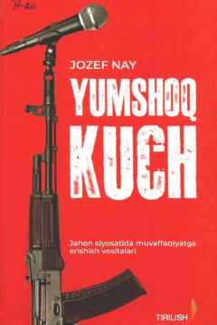

YKJahon siyosatida yumshoq kuch strategiyasi va uning ta'sir mexanizmlari haqidagi asar.
Ushbu kitobda xalqaro munosabatlar va jahon siyosatida "yumshoq kuch" konsepsiyasining ahamiyati, uning manbalari va qo'llanilish usullari atroflicha tahlil qilinadi. Muallif qattiq kuchning o'zgaruvchan tabiati hamda AQSh va boshqa davlatlarning tashqi siyosatida yumshoq kuchning rolini ochib beradi. Asar siyosatshunoslar, tadqiqotchilar va keng kitobxonlar ommasiga mo'ljallangan.